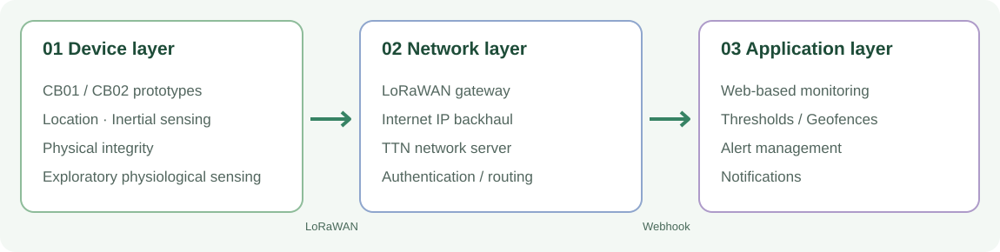
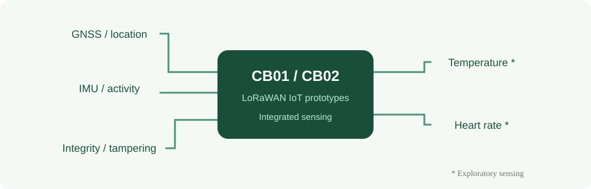
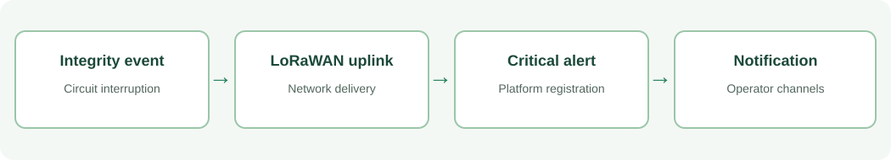

Real prototype footage · 14.7 s
OLED Display Power-On
Actual footage of the prototype screen during startup (14.7 seconds). This video does not document a tampering alert or live TTN transmission.
An experimental monitoring system integrating geolocation, inertial activity, physical-integrity detection, exploratory physiological sensing and a web-based alert platform.
Proof of concept · Indoor laboratory validation only · No field testing on cattle
CB01 and CB02 were assembled as equivalent experimental devices and evaluated under controlled laboratory conditions. The system was designed for future integration into cattle-worn monitoring hardware.
Experimental unit CB01 operating in NORMAL state, with OLED telemetry, battery indication, satellite count and sensor diagnostics.
Experimental unit CB02 operating in NORMAL state, showing the active electronics and OLED monitoring interface.
Recorded operational screen of unit CB02 (firmware v4.2).
CB01 operational display showing status and sensor diagnostics.
The high-level architecture follows the three layers described in Figure 1 of the research paper. The gateway requires an Internet backhaul to communicate with the network server.

Conceptual redrawing of the three-layer architecture in the paper (Fig. 1).

Location, motion and integrity detection form the central security-oriented capabilities. Temperature and heart-rate sensing remain exploratory.
Rules resolve from individual overrides to animal-category values and finally global defaults, independently per variable.
TTN uplink screenshot: pending upload. This section will show received packets after the original capture is provided and sensitive device identifiers are redacted.
A real recording of the prototype OLED startup. Additional experimental videos are not yet available; the dashboard screenshots below document the application interface.
Actual footage of the prototype screen during startup (14.7 seconds). This video does not document a tampering alert or live TTN transmission.
This recording documents the OLED startup only. The dashboard images below are application screenshots; the study was conducted in laboratory conditions, without deployment on cattle.
The application receives and stores messages, evaluates thresholds and geofences, registers alerts, and provides a management interface with multichannel notification workflows.
Overall status and pending alerts.
Inclusion and exclusion zones.
Per-device position and measurements.
Global, category and individual configuration.
Severity, deduplication and case handling.
Recorded instant-messaging alert examples.

Event-driven uplink and alert generation. Delivery time depends on network and downstream notification conditions.
Critical alert types
High-severity alert types
Medium-severity alert types
Fifteen predefined alert types in Section 4.3, Table 2 of the paper.
Values below reproduce the results reported in Section 4 of the paper. They are not field-performance or commercial-service claims.
In the three induced tampering tests, the observed end-to-end time from circuit interruption to Telegram notification was approximately 17 seconds. This is an experimental observation, not a guaranteed service-level latency.
Development of a LoRaWAN-Based IoT Prototype for the Early Detection of Events Compatible with Cattle Rustling in Bovine Herds
Pablo Araya del Pino, Cecilia Gamonal Vera, Jorge Retamal Pinto · Universidad Andrés Bello (2026).
Journal/conference citation and DOI: to be added after publication. The peer-reviewed article remains the authoritative source; this website offers visual supplementary material.
The study validated integration in an indoor laboratory with two units. It did not evaluate field performance on cattle, effectiveness against actual cattle rustling, LoRaWAN scaling under large herds, device energy autonomy, or integration with official Chilean traceability systems. Temperature and heart-rate sensing require bovine-specific validation.
Further work includes field deployment, physiological calibration, energy characterization, network scalability and security assessment.